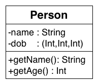
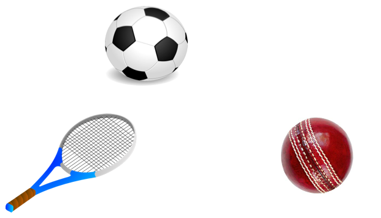
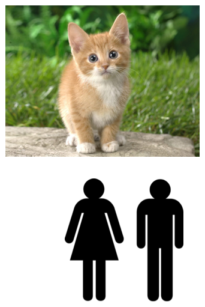
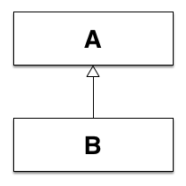
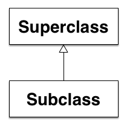

Objects
- Classification of features
- Assocate data , often called attributes, that provide characteristics
- Assocate functions, often called methods, that provide behaviour
Attributes
- For a person might we know
- Name
- Date of birth
- Gender
- Nationality
Attributes have types
name : String
dob : (Int,Int,Int)
gender : Gender
nationality : Nation
Attributes are often objects too
gender : Gender
nationality : Nation
Methods (i.e. functions)
- For a person might we be able to compute
- Get Name
- Is pensioner
- Is Female
- Is European
Classes
- Abstract represention (description) of an object
- Group attributes and methods together
- Encapsulate data (attributes) and methods (behaviour)
Classes are types too
A class definition in Scala introduces a new type
class A {
// attributes are defined here
// methods are defined here
}
Encapsulation can control access to attributes and methods
- Private (- in UML): limits access to within the class itself
- Public (+ in UML): allows external access
Class Diagram Private and Public Access

Objects may share characteristics
Objects may share characteristics

Objects may share characteristics

Inheritance
Passes knowledge "down" from one object to another
Inheritance
An object may "inherit" characteristics and behaviour from another
Inheritance
Creates a hierarchy of "inherited" characteristis and behaviours
Inheritance - Example(s)
- All students are people
- All children are people
- All workers are people
Inheritance using Classes
Remember classes are abstract representations of objects, so
Inheritance using Classes
If a class B "inherits" functionality from a class A, we say
Inheritance using Classes
- B is a subclass of A, and
- A is a superclass of B
Inheritance refines encapsulation
- Private (- in UML): limits access to within the class itself
- Public (+ in UML): allows external access
- Protected (# in UML): restricts access to subclasses
Inheritance
- Defines an "is a" relationship between subclass and superclass, e.g.
IS A Relationship
- Is a relationship meaning a subclass inherits and extends functionality of some base (super)class
Inheritance Class Diagram

Inheritance Class Diagram

HAS A Relationship
- Is a relationship meaning a class is using (contains) another class
When to use IS A or HSA A?
- If an object is a type of a more general class, then use "is a"
- If an object has a particular "feature", then use "has a"
Inheritance Polymorphism
- If B is subclass of A, then
- We can use an object of type B, in any context that expects an A
Inheritance Polymorphism
- A subclass B can overide methods of a superclass A
2D Shapes
- Shapes share many of the same attributes, e.g.
- Shapes all have a visual representation, however
- visually they look different
- the algorithm for drawing a circle is not the same as that for a square
Abstract Classes
- A class without one or more method implementations, e.g.
-
An abstract shape class might provide a method for
drawing shapes, but only specific inherited shapes,
e.g. square, can define the specific behaviour
(algroithm)
-
Java calls these interfaces
- Sadly this is a very overloaded term!
- Scala calls these abstract classes
- Lots more on this later in the course
In Summary
- Object-oriented programming provides a powerful model for developing applications
- Objects provide for:
- Encapsulationm, which helps enforces modularity
- Inheritance, enabling the passing of knowlege, which in turn provide reuse
- Inheritance Polymorphim, which provides the abilty to specialize "common" functionality